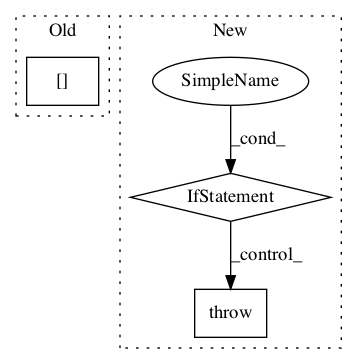

980fe014b6215730ac4fdfa451b067e6fb44e622,tensorforce/agents/dpg.py,DeterministicPolicyGradient,__init__,#DeterministicPolicyGradient#Any#Any#Any#Any#Any#Any#Any#Any#Any#Any#Any#Any#Any#Any#Any#Any#Any#Any#Any#Any#Any#Any#Any#Any#Any#Any#,129

Before Change
if update_frequency != "batch_size":
update["frequency"] = update_frequency
if start_updating is not None:
update["start"] = start_updating
optimizer = dict(type="adam", learning_rate=learning_rate)
objective = "deterministic_policy_gradient"
After Change
// Config, saver, summarizer, recorder
config=None, saver=None, summarizer=None, recorder=None,
// Deprecated
estimate_terminal=None, critic_network=None, **kwargs
):
raise TensorforceError(message="Temporarily broken.")
if estimate_terminal is not None:
raise TensorforceError.deprecated(
name="DPG", argument="estimate_terminal", replacement="predict_terminal_values"
)
if critic_network is not None:
raise TensorforceError.deprecated(
In pattern: SUPERPATTERN
Frequency: 3
Non-data size: 3
Instances
Project Name: reinforceio/tensorforce
Commit Name: 980fe014b6215730ac4fdfa451b067e6fb44e622
Time:
Author: null
File Name: tensorforce/agents/dpg.py
Class Name: DeterministicPolicyGradient
Method Name: __init__
Project Name: stellargraph/stellargraph
Commit Name: bcf6d0a188ee9ba868c1de01c347f813e3aaa35c
Time:
Author: null
File Name: stellargraph/layer/appnp.py
Class Name: APPNP
Method Name: propagate_model
Project Name: GPflow/GPflow
Commit Name: f36052b395dc48a473dcc5b49d8d9a3b5d6f58ba
Time:
Author: null
File Name: gpflow/conditionals/util.py
Class Name:
Method Name: sample_mvn